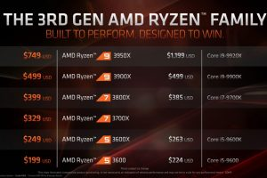
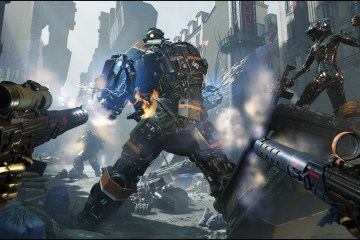

Drivers GeForce 441.20 WHQL para Star Wars: Jedi Fallen Order (+SLI) y Stormland – Fixes para RDR2, CS:GO, Q3A y The Surge 2

AMD Ryzen Threadripper 3950X, 3960X y 3970X se lanzarán este 25 de Noviembre – Especificaciones y Precios

Rune II ya disponible en Epic Games Store – Trailer de Lanzamiento

VR Ping Pong Pro ya disponible para PCVR y PSVR – Trailer de Lanzamiento
